SRSA Policy Deployment in Simulation
We deploy the trained SRSA policies in simulation on 5 distinct assemblies and we show the policy performance in the videos below.
| 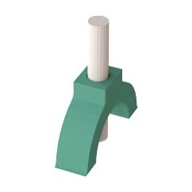 | 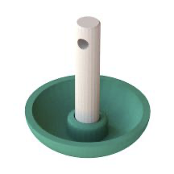 | 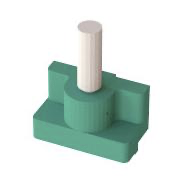 | ||
 |
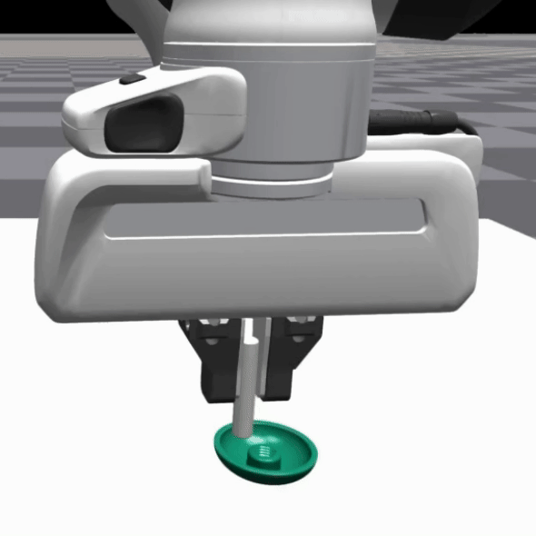 | 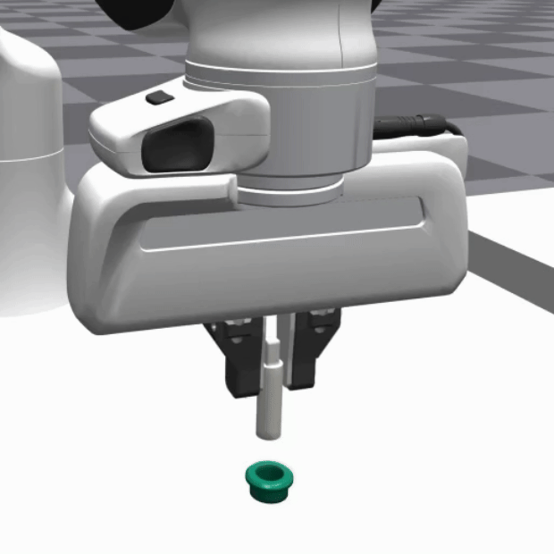 |  |
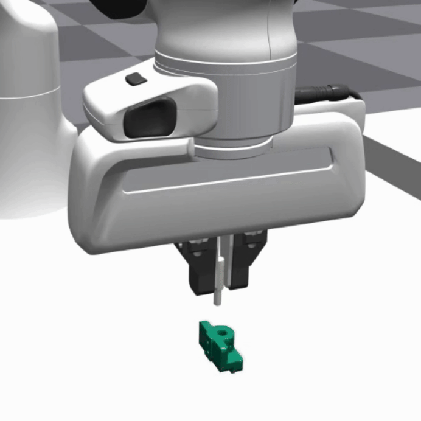 |
Enabling robots to learn novel tasks in a data-efficient manner is a long-standing challenge. Common strategies involve carefully leveraging prior experiences, especially transition data collected on related tasks. Although much progress has been made for general pick-and-place manipulation, far fewer studies have investigated contact-rich assembly tasks, where precise control is essential.
We introduce SRSA (Skill Retrieval and Skill Adaptation), a novel framework designed to address this problem by utilizing a pre-existing skill library containing policies for diverse assembly tasks. The challenge lies in identifying which skill from the library is most relevant for fine-tuning on a new task. Our key hypothesis is that skills showing higher zero-shot success rates on a new task are better suited for rapid and effective fine-tuning on that task. To this end, we propose to predict the transfer success for all skills in the skill library on a novel task, and then use this prediction to guide the skill retrieval process. We establish a framework that jointly captures features of object geometry, physical dynamics, and expert actions to represent the tasks, allowing us to efficiently learn the transfer success predictor.
Extensive experiments demonstrate that SRSA significantly outperforms the leading baseline. When retrieving and fine-tuning skills on unseen tasks, SRSA achieves a 19% relative improvement in success rate, exhibits 2.6x lower standard deviation across random seeds, and requires 2.4x fewer transition samples to reach a satisfactory success rate, compared to the baseline. In a continual learning setup, SRSA efficiently learns policies for new tasks and incorporates them into the skill library, enhancing future policy learning. Furthermore, policies trained with SRSA in simulation achieve a 90% mean success rate when deployed in the real world.
In this work, we consider the problem setting of solving a new target task leveraging pre-existing skills from a skill library. We focus on two-part assembly tasks as shown below.
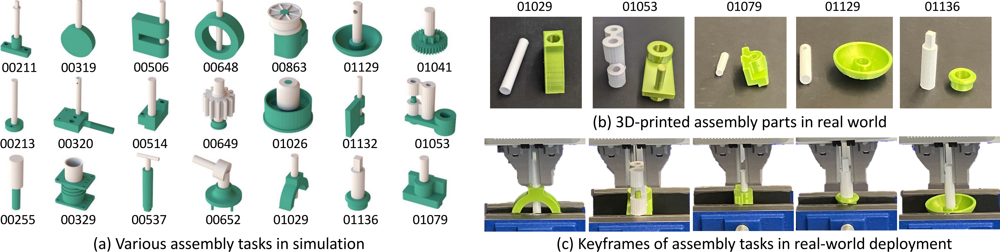Given a target task, we assume access to a prior task set. The skill library contains policies that solve each of the prior tasks, respectively. To solve a target task, the goal of reinforcement learning is to find a policy that produces an action for each state to maximize the expected return. We propose to first retrieve a skill (i.e., policy) for the most relevant prior task, and then rapidly and effectively adapt to the target task by fine-tuning the retrieved skill.
To effectively retrieve the skills that are useful for a new target task T , we require a means to estimate the potential of applying a source policy to the target task. We are inspired by two points from theoretical perspective:
We treat any two tasks from the prior task set as a source-target task pair. For each pair, we evaluate the source policy on the target task to obtain the zero-shot transfer success rate. The transfer success predictor takes the information about source and target tasks as input, and output the zero-shot transfer success.
We need a strong featurization of both the source and target tasks for efficient learning of transfer success predictor. We propose a framework that jointly captures features of geometry, dynamics, and expert actions to represent the tasks.
The geometry, dynamics, and expert action features are concatenated together to form task features. We then pass the concatenated task features through an MLP to predict the transfer success.
At test time, we use the well-trained transfer success predictor to predict the transfer success of applying any prior policy to a new task. We retrieve the source policy with a high predicted transfer success.
We compare our approach (SRSA) with the baseline retrieval strategies (Signature, Behavior, Forward, Geometry), as shown in the figure below. Overall, SRSA retrieves source policies that obtain around 10% higher success rates on the test tasks.
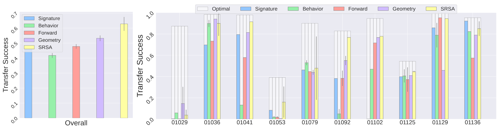Our ultimate goal is to solve the new task as an RL problem. The retrieved skill is used to initialize the policy network. We subsequently use proximal policy optimization (PPO) and self-imitation learning to fine-tune the policy on the target task. We compare SRSA with the leading baseline AutoMate to learn specialist policies for two-part assembly tasks. We consider two settings:
We deploy the trained SRSA policies in simulation on 5 distinct assemblies and we show the policy performance in the videos below.
| 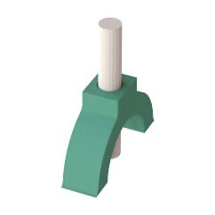 | 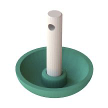 | 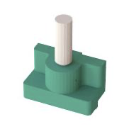 | ||
|
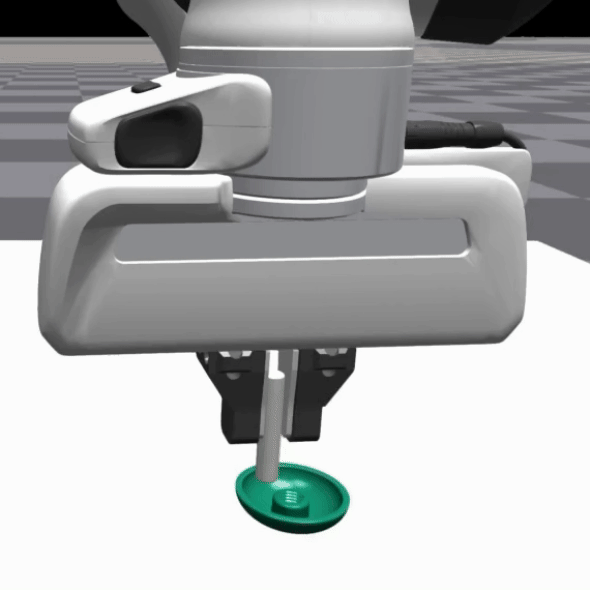 | 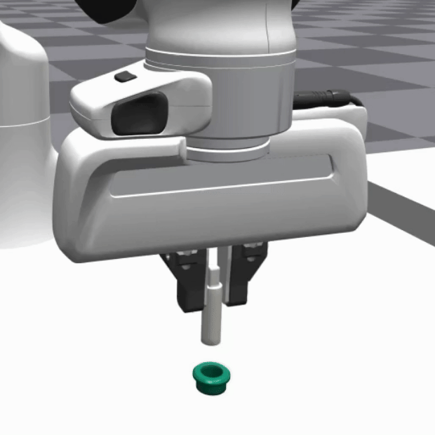 | |
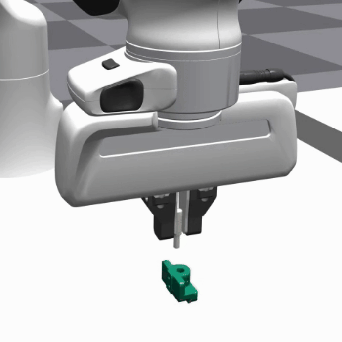 |
We deploy the trained SRSA policies in the real world and directly compare them to AutoMate.
The experimental setup is the same as AutoMate, we place the robot in lead-through (a.k.a., manual guide mode), grasp a plug, guide it into the socket, and record the pose as a target pose. We then programmatically lift the plug until free from contact; apply an $xy$ perturbation of $ \pm 10$ mm, $z$ perturbation of $15 \pm 5$ mm, and yaw perturbation of $\pm 5^{\circ}$; apply $x$, $y$, and $z$ observation noise of $\pm 2$ mm each; and deploy a policy.
We show the comparison between SRSA policies and AutoMate policies on 5 distinct assemblies in the videos below.
A: All source policies are initially trained with dense rewards, following the AutoMate approach for specialist policies. When fine-tuning on a target task with dense rewards, we initialize the critic network using the weights of the source policy's critic, as the reward scale is consistent with the one used in the original training. However, if we fine-tune with sparse rewards, we randomly initialize the critic network to accommodate the different reward scale and structure.
A: Task 1053 is relatively simple since both the plug and socket are large and easy to manipulate. In the dense reward setting, following the AutoMate framework, there’s an imitation reward component that encourages the agent to follow a disassembly trajectory. However, this disassembly trajectory may introduce bias, potentially creating local minima or artifacts in the dense reward function. For simpler tasks like this one, sparse rewards that only reward success can provide a more direct and unbiased signal, leading to better performance.
A: This approach is indeed a straightforward method for skill retrieval, but it’s computationally intensive. Evaluating a single source policy on a target task requires 1,000 episodes to reliably measure the zero-shot transfer success rate, which takes about 20 minutes on a single V100 GPU. As the skill library grows, this process becomes increasingly costly and unscalable, as evaluating every source policy on each target task to identify the most relevant one would require significant computational resources.
A: To manage storage as the skill library expands, we propose maintaining a fixed number of policies that maximize coverage of the task embedding space. Specifically, we propose clustering tasks based on a similarity matrix, where similarity is measured by the zero-shot transfer success rate between any pair of source policies and target tasks. For each cluster, we can retain a single policy capable of addressing all tasks within that cluster.